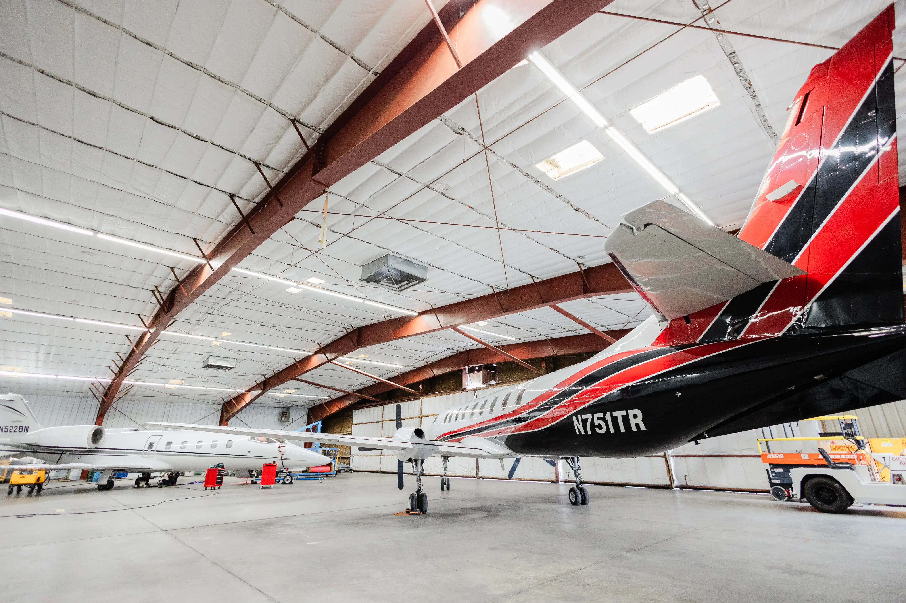

On Demand Flights
We live in a world where time is money. Thus having the ability to transport people, cargo and/or animals at a moment’s notice is Sierra West Airlines specialty.
Just how on demand are our flights? We strive to be wheels up within an hour, after the time you say, “Go!”